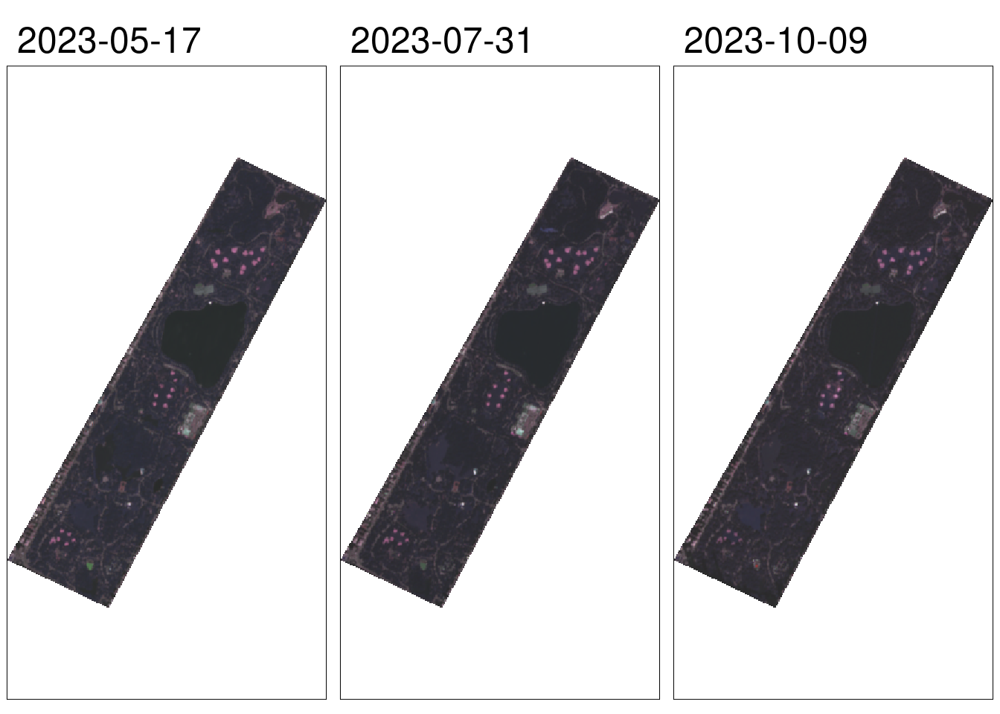
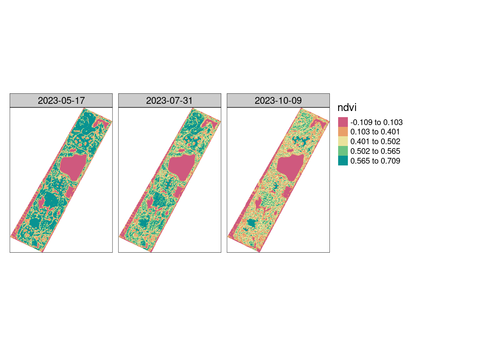
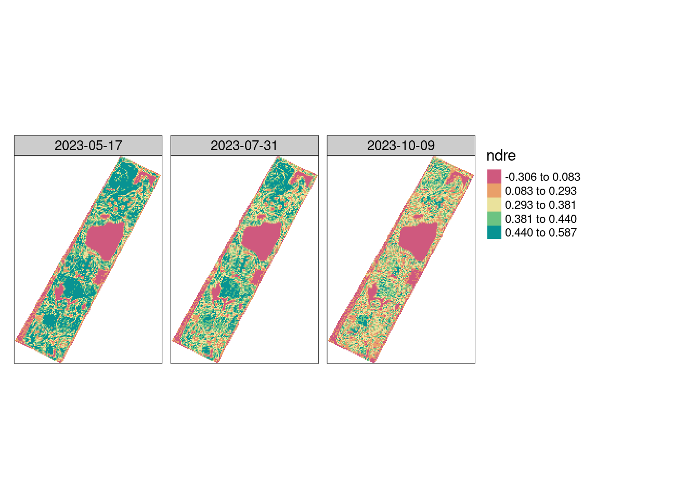

library(pacu)
library(sf)I thought it would be interesting to look at how to retrieve remotely sensed data from Sentinel-2 using the pacu package. For this example, I decided to take a look at the Central Park in New York city. Although it is not an agricultural setting, it is public large vegetated area.
The framework to download, process, and visualize the data for an agricultural field would be nearly identical. The one big difference would be the geographical coordinates. These would have to point to the targeted agricultural field.
First, we can start by loading the libraries we will need for this.
Now, we can define our area of interest. In this case, we will define the Central Park as our targeted area.
central.park <- read_sf('./central-park.shp', quiet = TRUE)The first step to retrieve Sentinel-2 data is to register with Copernicus Data Space. Please check the package vignettes -more specifically the satellite data vignette- for more information on registering. You can also check the help page for the function pa_initialize_dataspace().
?pa_initialize_dataspaceWe can browse the Data Space catalog and check how many images will meet our search parameters. In this case, I am searching for images covering the Central Park between May and October, with 20% or less cloud coverage.
We can see that there are a total of 21 images the meet our criteria.
available.images <- pa_browse_dataspace(aoi = central.park,
start.date = '2023-05-01',
end.date = '2023-10-30',
max.cloud.cover = 20)
available.imagesSearch parameters
Start date: 2023-05-01
End date: 2023-10-30
Max. cloud cover: 20%
Collection name: SENTINEL-2
Results
Total: 21
Online: 21 The summary() function can be used to tell us how many images we have available for every month.
summary(available.images)------------------
Year Month Count
--- --- ---
2023 5 6
2023 6 2
2023 7 3
2023 8 3
2023 9 4
2023 10 3
------------------
Total 21 Let us take a look at an image from May, one from July, and one from October.
ps: I am setting verbose to FALSE from now on to suppress the progress bar.
downloaded.images <- pa_download_dataspace(available.images[c(3, 11, 21), ],
aoi = central.park,
dir.path = '.',
verbose = FALSE)We can look at a true color image using the pa_get_rgb() function.
true.color <- pa_get_rgb(downloaded.images,
verbose = FALSE)
pa_plot(true.color)
Alternatively, we can take a look at vegetation indices, such as the Normalized Difference Vegetation Index (NDVI).
ndvi <- pa_compute_vi(downloaded.images,
vi = 'ndvi',
aoi = central.park,
check.clouds = TRUE,
verbose = FALSE)
pa_plot(ndvi)
We cal also look at the Normalized Difference Red Edge (NDRE) index. We can see that the image is at a coarser resolution, when compared to the NDVI image. This is because the Red Edge band in Sentinel-2 is at a 20m resolution, while the bands involved in the NDVI computation are at a 10m resolution.
ndre <- pa_compute_vi(downloaded.images,
vi = 'ndre',
aoi = central.park,
check.clouds = TRUE,
verbose = FALSE)
pa_plot(ndre)
Conclusion
We have seen how pacu can help us browse, download, and process satellite images for a non-agricultural setting. The workflow for an agricultural field would be nearly identical. We would only need to replace the area.of.interest.